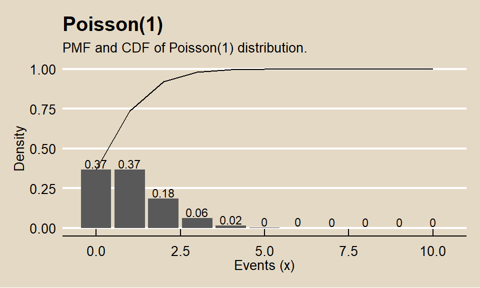

7.2 MARS
Multivariate adaptive regression splines (MARS) is a non-parametric algorithm that creates a piecewise linear model to capture nonlinearities and interactions effects. The resulting model is a weighted sum of basis functions \(B_i(X)\):
\[\hat{y} = \sum_{i=1}^{k}{w_iB_i(x)}\]
The basis functions are either a constant (for the intercept), a hinge function of the form \(\max(0, x - x_0)\) or \(\max(0, x_0 - x)\) (a more concise representation is \([\pm(x - x_0)]_+\)), or products of two or more hinge functions (for interactions). MARS automatically selects which predictors to use and what predictor values to serve as the knots of the hinge functions.
MARS builds a model in two phases: the forward pass and the backward pass, similar to growing and pruning of tree models. MARS starts with a model consisting of just the intercept term equaling the mean of the response values. It then asseses every predictor to find a basis function pair consisting of opposing sides of a mirrored hinge function which produces the maximum improvement in the model error. MARS repeats the process until either it reaches a predefined limit of terms or the error improvement reaches a predefined limit. MARS generalizes the model by removing terms according to the generalized cross validation (GCV) criterion. GCV is a form of regularization: it trades off goodness-of-fit against model complexity.
The earth::earth() function (documentation) performs the MARS algorithm (the term “MARS” is trademarked, so open-source implementations use “Earth” instead). The caret implementation tunes two parameters: nprune and degree. nprune is the maximum number of terms in the pruned model. degree is the maximum degree of interaction (default is 1 (no interactions)). However, there are other hyperparameters in the model that may improve performance, including minspan which regulates the number of knots in the predictors.
Here is an example using the Ames housing data set (following this tutorial.
library(tidyverse)
library(earth)
library(caret)
# set up
ames <- AmesHousing::make_ames()
set.seed(12345)
idx <- createDataPartition(ames$Sale_Price, p = 0.80, list = FALSE)
ames_train <- ames[idx, ] %>% as.data.frame()
ames_test <- ames[-idx, ]
m <- train(
x = subset(ames_train, select = -Sale_Price),
y = ames_train$Sale_Price,
method = "earth",
metric = "RMSE",
minspan = -15,
trControl = trainControl(method = "cv", number = 10),
tuneGrid = expand.grid(
degree = 1:3,
nprune = seq(2, 100, length.out = 10) %>% floor()
)
)The model plot shows the best tuning parameter combination.

## nprune degree
## 25 45 3How does this model perform against the holdout data?
## RMSE Rsquared MAE
## 0.16515620 0.85470300 0.09319503